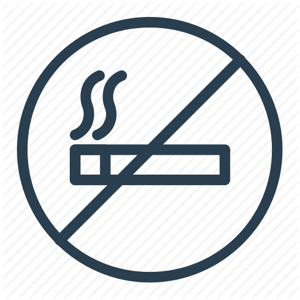

Cigarešu smēķēšana izraisa smagas slimības un rada atkarību !
Kad cigarete tiek aizdedzināta, tabaka deg un rada dūmus. Cigarešu
dūmos ir atklātas vairāk nekā 8000 ķīmiskās vielas jeb „dūmu
sastāvdaļas”. Veselības aizsardzības iestādes apmēram 100 no tām ir
klasificējušas kā ar smēķēšanu saistītu saslimšanu, tādu kā plaušu
vēža, sirds un asinsvadu slimību un emfizēma, cēloņus vai
potenciālos cēloņus. Šīs sastāvdaļas cita starpā ietver arsēnu,
benzolu, benzpirēnu, oglekļa monoksīdu, smagos metālus
(piemēram, svinu, kadmiju), zilskābi un tabakai raksturīgos
nitrozamīnus.
Vai visas cigaretes ir kaitīgas un izraisa atkarību?
Jā, visas cigaretes ir kaitīgas un izraisa atkarību. Lai arī tirgū ir
pieejami dažādi cigarešu zīmoli ar dažādām īpašībām (piem.,
cigaretes sastāva maisījuma stils, diametrs, garums, kā arī darvas,
nikotīna vai oglekļa monoksīda daudzums), smēķētājiem
nevajadzētu uzskatīt, ka jebkuras no šīm īpašībām nozīmē, ka kāda
cigarete ir mazāk kaitīga vai mazāk atkarību izraisoša, nekā cita.
Lai arī atmest cigarešu smēķēšanu var būt ļoti grūti, miljoniem smēķētāju
visā pasaulē tas ir izdevies.
Darva, nikotīns un oglekļa dioksīda līmenis
Darva
Darva ir cigarešu dūmos atrodamo daļiņu atlikumi. Tas nav viens
atsevišķs elements, bet gan vairāku tūkstošu dūmu sastāvdaļu
maisījums. Darvu mēra laboratorijas apstākļos, notverot daļiņas
filtrā un tad atdalot ūdeni un nikotīnu.
Nikotīns
Nikotīns ir tabakas augā dabiski izveidojusies ķīmiska viela. Dedzinot
tabaku, nikotīns pāriet dūmos. Nikotīns, lai arī tas izraisa atkarību,
nav primārais ar smēķēšanu saistīto slimību cēlonis.
Oglekļa monoksīds
Oglekļa monoksīds ir gāze, kas veidojas cigarešu dūmos. Ir atklāts,
ka oglekļa monoksīds ir galvenais smēķētāju sirds un asinsvadu
slimību cēlonis.

Cik daudz alkohola ir par daudz?
Lai gan neregulāra alkoholisko dzērienu dzeršana maz ticams, ka kaitēs jūsu veselībai, pārmērīga dzeršana var būtiski negatīvi ietekmēt jūsu ķermeni un labsajūtu.
Jums var rasties jautājums, kurā brīdī jūsu dzeršana kļūst kaitīga jūsu veselībai, kā arī par to, cik daudz ir par daudz.
Pārmērīga dzeršana ietekmē jūsu veselību un gandrīz visas ķermeņa daļas. Tas var ne tikai sabojāt dzīvībai svarīgus orgānus, bet arī ietekmēt jūsu garastāvokli un uzvedību.
Aknas
Aknu bojājumi ir vēl viena hroniskas intoksikācijas sekas.
Lielākā daļa izdzertā alkohola tiek metabolizēti aknās. Tas rada potenciāli kaitīgus blakusproduktus, kas var bojāt aknu šūnas. Laika gaitā turpinot dzert, jūsu aknu veselība pasliktinās.
Alkohola taukainu aknu slimība ir agrākā alkohola izraisītā aknu bojājuma pakāpe. Šis stāvoklis var rasties laika gaitā, kad pārāk daudz alkohola izraisa tauku uzkrāšanos jūsu ķermeņa aknu šūnās, kas var traucēt aknu darbību.
Tā ir visizplatītākā ķermeņa reakcija uz hronisku alkohola lietošanu, un tā var attīstīties pat 90% cilvēku, kuri hroniski dzer vairāk nekā 5 dzērienus dienā.
Tā kā alkohola lietošana turpinās, taukainu aknu slimība galu galā var izraisīt aknu iekaisumu, cirozi un pat aknu mazspēju, kas ir dzīvībai bīstams stāvoklis.
Smadzenes
Pārmērīga alkohola lietošana var negatīvi ietekmēt jūsu centrālo nervu sistēmu.
Vairāki faktori ietekmē to, cik daudz un cik tas ietekmē jūsu smadzenes, tostarp to, cik daudz un cik bieži jūs dzerat, vecumu, kurā sākāt dzert, seksu un daudz ko citu.
Sākotnējā alkohola ietekme uz centrālo nervu sistēmu ir neskaidra runa, atmiņas traucējumi un traucēta roku-acu koordinācija.
Atkarību
Alkohola ietekme var būt garīgi un fiziski atkarīga.
Piespiedu dzeršanas sajūta, rūpes par to, kur un kad dzert nākamo dzērienu, un grūtības baudīt bez dzeršanu – tas viss ir izplatītas alkohola atkarības pazīmes.
Šīs atkarības cēlonis var būt sarežģīts. To daļēji var izraisīt ģenētika un ģimenes vēsture, taču jūsu videi var būt arī liela nozīme.
Vai esi kādreiz padomājis cik daudz naudas iztērē kaitīgiem ieradumiem?
Kā jau mēs visi zinām smēķēšana un pārmērīga alkohola lietošana ir kaitīga veselībai.
Papildus tam, ka šie ieradumi ir kaitīgi veselībai, tie maksā ievērojamu naudas summu.
Esmu izveidojis kalkulatoru ar kuru var aprēķināt cik daudz naudas Jūs iztērējat mēneša laikā.
Decimālskaitļus atdalīt ar punktu, nevis komatu. Piemērs: ja alus pudele maksā EUR 2.50 , tad rakti 2.5
Ja kādu no dotajām vienībām nelietojat, lodziņu atstāt tukšu.